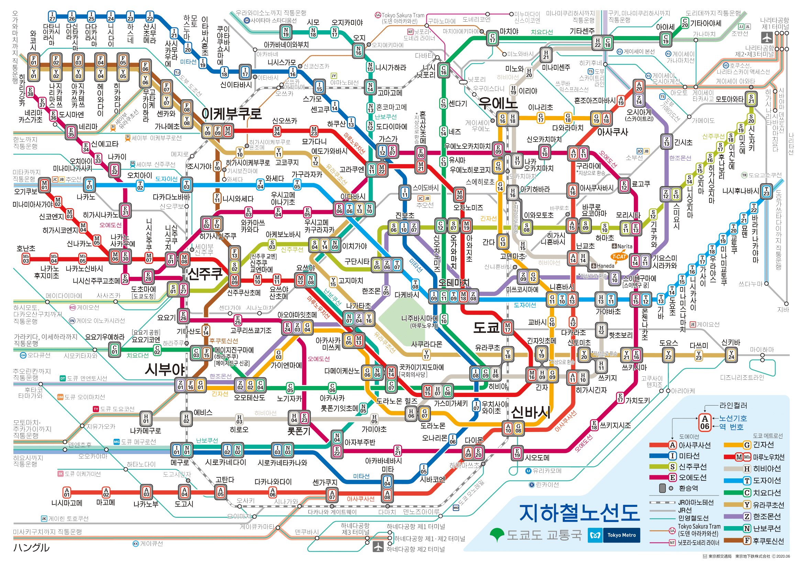

도쿄여행안내
도쿄 지역별
계절 별 및 전철노선도
봄 관광 가이드
여름 관광 가이드
가을 관광 가이드
겨울 관광 가이드
축제`행사 캘린더
전철 노선도
여행 팁
현지인들이 가는 곳
공유
TOKYO METRO MAP
도쿄 지하철 노선도

긴자 선 G
오모테산도
아오야마잇쵸메
아카사카미츠케
토라노몬
신바시
아사쿠사 선 A
신바시
니혼바시
아사쿠사바시
아사쿠사
오시아게
후쿠토신 선 F
센카와
카나메쵸
조시가야
히가시신주쿠
신주쿠산쵸메
히비야 선 H
에비스
롯폰기
카스미가세키
히비야
긴자
도자이 선 T
나카노
키바
이타바시
니시카사이
니시후나바시
한조몬 선 Z
시부야
오모테산도C
오테마치
스이텐구마에
킨시쵸
치요다 선 C
노기자카
아카사카
콧카이기지도마에(국회의사당)
히비야
신오차노미즈
유라쿠쵸 선 Y
이케부쿠로
에도가와바시
이타바시
유라쿠쵸
신토미쵸
난보쿠 선 N
메구로
롯폰기잇쵸메
나가타쵸
이치가야
혼코마고메